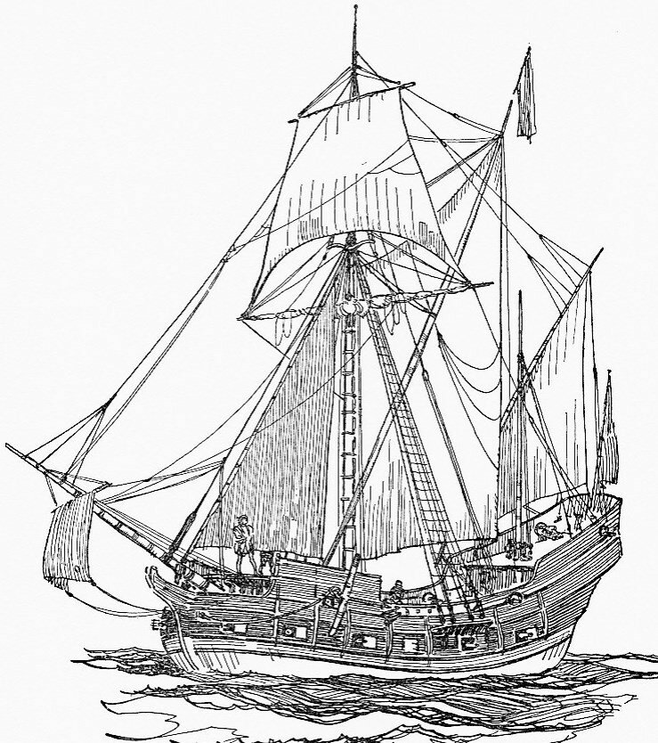
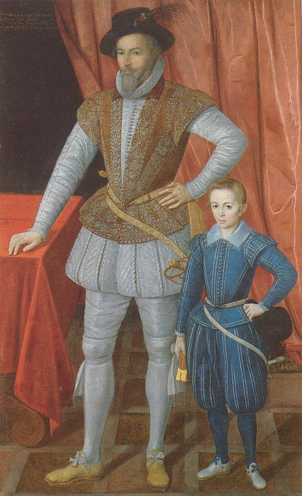
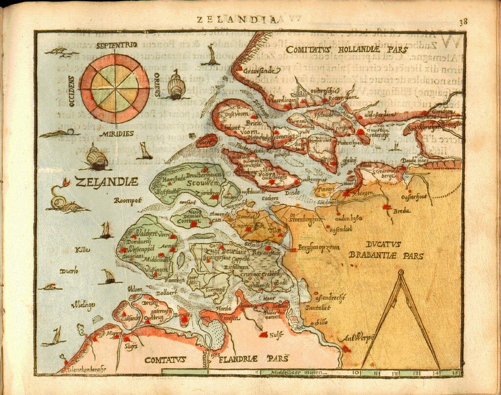

Название следующего типа английских галер в русской литературе практически не встречается, если не считать нескольких переводных романов. Корабль этот – кромстер ( cromster). Учитывая его малую популярность у наших писателей, расскажем о нем поподробнее.

Кромстер
В английских документах кромстеры появляются в самом конце шестнадцатого века. Если судить по названию (cromster, crumster или crompster), то мы можем предположить голландское его происхождение. По-голландски kromsteven – «закругленный нос», что сразу же дает один из характерных признаков этого судна. Такие корабли широко использовались в конфликтах Нидерландов с Испанией в 70-х годах шестнадцатого века. Мы встречаем их упоминания в архивных документах, относящихся к этому периоду. В печатных же источниках ссылка на события, в которых фигурируют кромстеры, появляется в 1596 году, в мемуарах сэра Уолтера Рэли «Открытие богатой, обширной и прекрасной Гвианской империи», или, как чаще цитируют эту работу, «Открытие Гвианы». Приведем это место из мемуаров (сразу же просим прощения за длинную цитату, но иначе не понять контекст первого появления термина в печатном английском языке):
There is therefore great difference between the easiness of the conquest of Guiana , and the defence of it being conquered, and the West or East Indies . Guiana hath but one entrance by the sea, if it hath that, for any vessels of burden. So as whosoever shall first possess it, it shall be found unaccessible for any enemy, except he come in wherries, barges, or canoas , or else in flat-bottomed boats; and if he do offer to enter it in that manner, the woods are so thick 200 miles together upon the rivers of such entrance, as a mouse cannot sit in a boat unhit from the bank. By land it is more impossible to approach; for it hath the strongest situation of any region under the sun, and it is so environed with impassable mountains on every side, as it is impossible to victual any company in the passage. Which hath been well proved by the Spanish nation, who since the conquest of Peru have never left five years free from attempting this empire, or discovering some way into it; and yet of three-and-twenty several gentlemen, knights, and noblemen, there was never any that knew which way to lead an army by land, or to conduct ships by sea, anything near the said country. Orellana , of whom the river of Amazons taketh name, was the first, and Don Antonio de Berreo , whom we displanted, the last: and I doubt much whether he himself or any of his yet know the best way into the said empire. It can therefore hardly be regained, if any strength be formerly set down, but in one or two places, and but two or three crumsters or galleys built and furnished upon the river within. The West Indies have many ports, watering places, and landings; and nearer than 300 miles to Guiana , no man can harbour a ship, except he know one only place, which is not learned in haste, and which I will undertake there is not any one of my companies that knoweth, whosoever hearkened most after it.
Таким образом, Гвиану легко и завоевать и удержать после завоевания. Поэтому существует большая разница между Гвианой и Вест-Индией или Ост-Индией. Для любого груженого судна есть лишь один морской вход в Гвиану, и кто первый ее завоюет, тот обнаружит, что она недоступна для любого врага, если только этот враг не придет на баржах, яликах и каноэ или на других плоскодонных лодках. А если бы неприятель и отважился войти в нее таким способом, то на двести миль по рекам у этого входа столь густые леса, что будь в лодке даже мышь, ей не избежать здесь пули с берега. По суше добраться до Гвианы совсем уж невозможно, ибо нет под солнцем земли более недоступной, и вокруг нее со всех сторон непроходимые горы, так что невозможно прокормить какое бы то ни было войско на марше.
Это было изведано испанским народом, который со времени завоевания Перу не реже чем раз в пять лет предпринимал попытки попасть в эту империю или же открыть какую-либо дорогу в нее. И все-таки из двадцати трех различных джентльменов, рыцарей и знатных господ не было ни одного, кто знал бы, каким путем вести войско по суше или направить корабли по морю, дабы оказаться хоть поблизости от указанной страны. Орельяно, от которого получила имя Амазонка, был первый, а дон Антонио де Беррео (которого мы наголову разгромили) — последний; и я очень сомневаюсь, знает ли он или кто другой из них лучший путь, ведущий в указанную провинцию. Поэтому едва ли кто сможет отвоевать ее обратно, если только в ней будут заранее размещены какие-нибудь силы (всего только в одном или в двух местах) и построены и поставлены на реке в ее пределах всего два или три небольших береговых судна или галеры. Кроме того, если в Вест-Индии много гаваней, мест для взятия воды и высадки, то в трехстах милях от Гвианы никто не сможет завести корабль в гавань, если только не знает одного-единственного места, которое второпях обнаружить невозможно; а что предприму здесь я, этого не узнает ни один человек, даже из моего отряда, как бы они ни старались.
Sir Walter Raleigh, Discovery of the large, rich, and beautiful Empire of Guiana
Уолтер Рэли. Открытие богатой, обширной и прекрасной Гвианской империи. М. Географгиз. 1963 (пер. А. Дридзо)
Меня всегда поражает близорукость переводчиков, не берущих на себя ответственность за введение в русскоязычный оборот названий кораблей и судов из переводимых ими оригиналов. В данном случае мы имеем дело определенно с уникальным явлением – появлением в английском печатном тексте обозначения для нового типа кораблей, кромстеров. А уважаемый А.Дридзо обходит это событие, ограничившись безликим переводом «три небольших береговых судна». Даже в примечаниях ни слова не говорит по этому поводу.
Мы уже встречались с явлением, когда названия типов кораблей, основанные на оперативном использовании судна или особенностях его конструкции или размерений , пересекались, накладывались друг на друга,. Кромстер стал одним из, по крайней мере, четырех типов кораблей, которые получили широкое распространение в период между серединой шестнадцатого и серединой семнадцатого веков. Остальные три – это фрегат, шлюп и флибот (флайбоут, flyboat). И мы уже сталкивались с нерешенной пока проблемой - четко отделить эти корабли друг от друга, с попытками дать определение каждого класса, которое выделяло бы все принадлежащие этому классу корабли из массы других. Всегда оставались суда, которые по тем или иным характеристикам попадали больше, чем в один класс. И единственный способ, как нам кажется, отделить их друг от друга – это хронологический и исторический анализ появления этих кораблей на морской арене.
Мы уже привели дату – 1596 год – когда появилась первая печатная публикация, упоминавшая кромстеры. Но ведь не из воздуха Уолтер Рэли взял эти корабли, они должны были где-то проявить себя в истории, где-то действовать. И найти эти первоистоки нам поможет тот же Рэли.

Сэр Уолтер Рэли и сын. Анонимный автор. 1602. National Portrait Gallery
Когда Рэли в Тауэре дожидался приведения в исполнение вынесенного ему смертного приговора, то не предавался молитвам о спасении своей души, что было бы бесполезным занятием, ибо никакое вмешательство высших сил не помогло бы загладить «подвиги» корсара; Рэли писал наставление для мореплавателей, которое было предназначено для наследного принца герцога Уэльского и, хотя написано было где-то между 1603 и 1618 гг., увидело свет лишь в 1650 году. В работе неоднократно упоминаются кромстеры, но нас в данном случае будет интересовать, к каким годам относится их первое появление. Эта дата более чем на три десятка лет предшествует приведенному в Оксфордском словаре первому появлению кромстеров в английском языке (1596) и относится к 1572 году. В это время в Нидерландах сложилась следующая ситуация.

Карта Нидерландов (1598 год)
После того, как 1 апреля 1572 года «морские гёзы» захватили расположенный в дельте Мааса город Брилле, герцог Альба все усилия своего флота сосредоточил в устье Шельды с целью удержания Флиссингена, который являлся ключевым пунктом для обеспечения прохода испанских и португальских кораблей в Амстердам. Однако удержать Флиссинген испанцы не смогли. Для возвращения этого города в устье Шельды была направлена эскадра в составе сорока кораблей, на борту которых, помимо 2500 тысяч солдат подкрепления, находился герцог Медина Коэли, призванный заменить на посту правителя Нидерландов герцога Альбу. Некоторые из кораблей эскадры, в основном из числа мобилизованных купеческих судов, не имеющих опыта ведения боевых действий на море, 10 июня 1572 года неосторожно подошли к городским укреплениям Флиссингена и подверглись губительному обстрелу крепостной артиллерии гёзов. Воспользовавшись паникой на кораблях испанской эскадры, к ним подошел отряд кораблей «морских гёзов» под командованием Эвальда Петерсона, известного под именем Капитан Ворст (Worst). Двадцать четыре судна были захвачены, в качестве трофеев на них взяли большое количество денег (200 тыс крон) и товаров. Герцог Медина Коэли укрылся в ближайшем пункте базирования испанского флота, после чего, так и не приступив к своим обязанностям, вернулся в Испанию.
Описывая неудачу испанцев при доставке морем нового правителя Нидерландов, Рэли пишет:
The like success had Captain Worst of Zealand, against the Fleet which transported the Duke of Medina Caeli, who was sent out of Spain by sea, to govern the Netherlands in place of the Duke of Alva; for with twelve Crumsters or Hoys, of the first Troop of 21 sail he took all but three, and he forced the second (being 12 great ships filled with 2000 Soldiers) to run under the Ramakins, being then in the Spaniards Possession ...
Похожего успеха добился зеландский капитан Ворст против флота, который перевозил морем из Испании герцога Медина Коэли на замену герцога Альбы в качестве правителя Нидерландов; имея двенадцать кромстеров, или хоев, капитан захватил 18 кораблей из первой эскадры (21 судно), вынудив вторую эскадру (12 больших кораблей с 2000 солдат на борту) отойти к крепости Ramakins, находившейся в то время у испанцев.
Мы не будем придираться к незначительному расхождению в цифрах. Во всей этой баталии нас интересует состав флота Капитана Ворста. Уолтер Рэли в своих записках пишет о «twelve crumsters or hoys», т.е. гёзы смогли одержать победу над испанских флотом в устье Шельды, располагая всего двенадцатью «кромстерами или хоями».
Исследование источников, относящихся к этому периоду истории Нидерландской революции дает нам еще одно открытие. Оказывается, в написанных в 1584 году мемуарах известного «солдата удачи», уэльского наемника сэра Роджера Уильямса, который за время своей службы в Нидерландах несколько раз менял хозяев, также упоминаются кромстеры. Принц Оранский послал для усиления гарнизона Гарлема, осажденного испанцами, «пять тысяч солдат и около шестидесяти хоев и кромстеров, из которых шесть были галиоты и фрегаты»:
... the Prince dispatched away his chiefs with some five thousand soldiers and about sixty hoys and cromsters, of which six were galiots and frigates.
Из этого отрывка мы можем сделать заключение, что кромстеры не являлись хоями, в отличие от сообщения Рэли, в котором фактически не делалось различия между этими двумя кораблями. Кроме того, мемуары Уильямса позволяют нам сдвинуть время появление термина «кромстер» в английском языке на двенадцать лет раньше. Более раннего упоминания кромстеров у англичан найти нам не удалось.
Зато в испанских текстах кромстеры появлялись и ранее. Герцог Альба, докладывая королю план освобождения захваченных гёзами районов, большое внимание уделил проведению для этой цели амфибийных операций, для которых самыми приемлемыми судами оказались кромстеры. Герцог называет их cromstem, очевидно, желая сразу же перевести на понятный морской язык голландский термин kromsteven. И в битве за центр Зеландии Мидделбург как испанцы, так и голландцы, широко используют кромстеры. Роджер Уильямс в упомянутых выше мемуарах пишет:
The Prince, hearing their intent, prepared for his navy all or most of the ships of war that Holland and Zeeland could make at that time, to the number of some two hundred-a few ships, the rest crumsters and hoys. These are the best ships to fight in these waters by reason the most of them draw but little water and carry for the most part principal good artillery, some demicannons, and many whole culverins; for those waters are full of sands and many dangers, although it be broad in some places ten of our miles, all covered with seas, notwithstanding not navigable in the most places but in narrow streams.
Принц [Оранский] услышав об их намерении, ввел в состав своего флота военные корабли, которые могли в это время строить в Голландии и Зеландии, общим числом около двухсот, из которых несколько были парусными кораблями, остальные – кромстеры и хои. Такие корабли лучше всего подходят для боевых действий в этих водах, полных песчаных отмелей и многих опасностей, хотя и имеющих широкие открытые пространства до десяти миль, но доступных для навигации лишь по узким фарватерам, так как они мелко сидят в воде, имея, вместе с тем, большое количество артиллерии на борту, в том числе несколько полу-пушек и кулеврин.
Исчерпывающая характеристика кромстеров, не правда ли?
Подобную оценку кромстерам дает и Уолтер Рэли.
На службе в английском флоте кромстеры впервые отмечаются в девяностые годы, причем известно, что четыре из них (Advantage, Answer, Crane и Quittance) были построены на английских верфях. Их грузоподъемность слегка превышала 200 тонн (у Advantage - 172 т), несли они три мачты, самый крупный из кромстеров английской постройки (Answer) имел в длину по килю 65 футов, ширину – 26 футов и глубину трюма – 13 футов. Экипаж включал 76 моряков, 12 канониров и 12 солдат. Вооружение – 20 орудий (полу-кулеврины, сакры, фалконы или фулеры; на Quittance дополнительно имелись две кулеврины).
В перечислениях кромстеры часто соседствуют с такими кораблями, как crayers, drumblers, hoys и barks.
Мы продолжим изучение кромстеров в следующий раз.